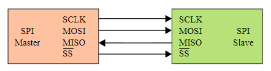
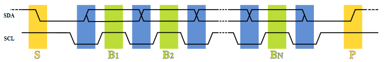

A microcontroller is a computer on a chip, designed to work with a minimal number of external components - in fact some can work with no external component at all.
Microcontrollers are manufactured to be embedded in products which are no perceived as computers by the end-user.
Due to their low cost and the flexibility of software solutions, they make an increasing fraction of the electronic hardware in general.
Like every computer, a microcontroller is a digital system, made of logic gates and memories, themselves made of transistors.
While desktop computers may also contain electro-magnetic devices like hard discs and electro-optical devices like CD/DVD units, microcontrollers are just highly complex fabrics of transistors, containing millions of them.
Having no operating system, a microcontroller executes constantly the only program its memory contains, however it is able to execute many tasks concurrently (in parallel).
Internally, computer work on binary data or bits.
Since working on one bit at a time would be inefficient, data are organized in binary words, which are fixed size collections of bits. For interoperability reasons, the word size is frequently a multiple of 8 bits.
An 8-bit binary word is an octet or byte.
A binary word may represent a number, for this purpose a weight is assigned to each bit:
Signed integer number representation in computers normally uses the two's complement scheme, while fractionnal numbers said floating point numbers are represented by words divided in three fields: sign bit, exponent and mantissa.
Reading binary data is uneasy for humans, so developers prefer to use base-16 or hexadecimal numbers to represent binary words comfortably in documentation and programs.
A binary word may be used to represent a text character. It appears that 8 bits are sufficient for representing the letters used by latin alphabets,
so the starting point was a code known as ASCII, representing all the characters of an american typewriter (for which 7 bits would have been sufficient).
Several solutions were proposed to extend this code to non-latin languages, the most successful being UTF-8, which uses a variable-length code, compatible with ASCII.
A piece of text is represented as a sequence of bytes, called a string. It is a common practice to use the zero byte (null character) to mark the end of the string.
In computer memory, data words are stored in 1D-arrays, which can be considered as tables where each line contains a binary word.
The lines are numbered in sequence, and their numbers are called the addresses, which are themselves handled in binary form
Many computers can read or write words which are larger than 8 bits, but to preserve the capability or writing or reading single bytes, the adresses are always byte addresses.
Programs in machine code are sequences of instructions coded and stored as compact binary words. The code is architecture-specific and not readable by humans.
When the instruction word size is fixed, the archicture is called RISC (Reduced Instruction Set Computer), otherwise it is called CISC (Complex Instruction Set Computer).
The main modules inside a microcontroller are :
The CPU contains a small number of registers which can store temporary data words which are accessed directly by instructions, without the need of an address.
Some of these have a special role, like keeping the next instruction address or the return address of a subroutine.
The CPU contains an ALU (Arithmetic and Logic Unit), which in the simplest form performs addition, subtraction and boolean and shift operations.
In this case, more complex operations like multiplication and division are performed by software, by combining simpler operations.
More advanced CPUs can perform multiplication and division in a single instruction, and high-end CPUs have the hardware floating point capability.
Microcontrollers use static RAM (SRAM), which is fast and consumes little power, but is limited to smaller capacities than the dynamic RAM (DRAM) used in desktop computers.
RAM is volatile, which means that the data it contains are lost each time the power is switched off.
The fact of being volatile is a disvantage, but this memory is much faster than non-volatile memories in particular when writing.
In architectures where the data memory and the program memory are entirely separated ("Harward architectures"), the RAM is simply called "data memory".
Microcontrollers need some non-volatile memory to have some program ready to execute immediately after power-up.
Non volatile memory can be :
In modern microcontrollers, programs are generally stored in flash memory. The CPU can read this memory, but not write into it.
Writing requires either an external hardware or a dedicated peripheral, and takes much more time than a regular memory access.
A small amount of OTP-ROM is sometimes present to store the program which is used to write programs into the flash memory under control of the development computer. Such a program is called bootloader
There are many types of specialized peripherals, here are the most common.
The CPU communicates with the peripheral by means of specialized registers which have a dedicated address space besides the main memories.
Each pin involved in GPIO can be programmed as a logic input or a logic output, and then handles one bit at a time under program control.
Logic 1 or "true" is represented by a high voltage, close to the power supply voltage (most often 3.3 Volts), while logic 0 or "false" is represented by a voltage close to zero (ground).
GPIO pins can source or sink a limited current, 4 mA to 20 mA depending on the model
Serial communication involves the transmission of all the bits of each word in sequence, one after the other, in order to minimize the cost of wiring.
SPI, I2C and UART are used for board area communication and differ by the number of wires used and the attainable speed, while USB is suitable for room area communication and Ethernet for building area communication
| data wires | clock wires | select wires | total wires incl. gnd | typ. speed | ||
| SPI | Serial Peripheral Interface | 2 | 1 | 1+ | 6 | 25 Mbits/s |
| I2C TWI | Inter-Integrated Circuit Two Wire Interface | 1 | 1 | 0 | 3 | 400 kbits/s |
| UART | Universal Asynchronous Receiver-Transmitter | 2 | 0 | 0 | 3 | 115200 Bauds |
SPI and I2C require one master device initiating the transfers and providing the clock, and one or more slaves,
while UART is a point-to-point connexion needing an application defined protocol
SPI uses 2 unidirectional data lines MOSI (Master Out Slave In) and MISO (Master In Slave Out), and one separate SS (Slave Select) for each slave device
I2C has one bidirectional data line SDA, and uses special patterns S (Start) and P (stop) to mark the block limits
UART transmits blocks of one byte, inserted between a "start" bit (always zero) and a "stop bit" (always 1).
The start bit leading edge causes the synchronisation of the receiver clock, which is used to sample the data bits.
The receiver clock frequency must match the transmitter clock frequency with a sufficient accuracy (~2%).
This frequency is historically called the "Baud rate".
For building area communication, the UART signals are amplified to higher voltages (RS232) or differential signals (RS485).
RS232 is obsolete but RS485 is still used for industrial equipments
A timer is a digital binary counter driven by a periodic signal (the CPU clock or a signal derived from it by frequency division).
It provides a high resolution time measurement (microseconds) and can generate periodic binary signals of arbitrary period and arbitrary pulse width (period and pulse width being multiples of the clock period).
The pulse width may be modulated in real time to produce a PWM signal (Pulse Width Modulation).
The average value of the PWM signal is proportional to the function used to modulate the pulse width.
This makes a convenient way to generate a slowly varying analog signal using a single digital pin, and to control a power device with reduced losses compared to a continous control.
The ADC (Analog to Digital Converter) produces a binary number proportional to the voltage received on a pin.
The conversion is not continuous and must be started periodically by software, or directly by a timer.
The DAC (Digital to Analog Converter) produces the inverse service. Notice that a timer in PWM mode also makes a digital to analog conversion, but a dedicated DAC is preferred when a wide bandwidth is needed.
The RTC keeps the time and date even when the main power supply is off, having a separate power supply.
Like watches, the RTC has a very low power need, being able to run for years on a small battery.
The RTC modules frequently contain a small amount of memory called the backup RAM, which keep application data when the microcontroller is off
The CPU may accept an interrupt signal from some peripherals. When this happens, the CPU completes the current instruction and then leaves the current instruction sequence and jumps to a specific interrupt service routine subroutine or interrupt handler, in order to perform some action required by the peripheral which emitted the interrupt request.
When the end of the interrupt routine is reached, the CPU returns to the instruction sequence which was interrupted. To ensure that the interrupted task is not disturbed by this process, a context saving sequence is strictly applied before entering the interrupt routine, and a matching context restoring sequence is applied upon return, by hardware and software combined.
An interrupt controller may be used to manage several sources of interrupt requests, and associate a dedicated interrupt routine and a priority level for each of these sources. This is called interrupt vectoring.
Interrupts are essentiel to the implementation of multitasking, in large computers as well as in microcontrollers.
In desktop computers, interrupts are managed by the operating system in a manner which is transparent for the application programs.
On microcontroller, managing interrupts is the developer's business
Arduino is the name of an Italian private company which made a successful attempt to enable non-professionals to learn electronics through embedded computing, and produce some home-made microcontroller based applications.
In this context, Arduino produced a minimal development platform, based on a moderate cost microcontroller board and a user-friendly free development software.
When people talk about "The Arduino" they refer to the board, or to the microcontroller itself.
While some choices made by Arduino are highly questionable, the benefit of this project is a worldwide acceleration of the DIY (Do-It-Yourself) microcontroller development activity. Notably many competing manufacturers put higher performance, lower cost boards on the market, while the open source community produced alternate software solutions.
The Uno is the first Arduino board and the most famous. While its technology was nearly outdated when it was introduced, it is still produced.
The board is equipped with two microcontrollers :
On delivery, the target microcontroller flash memory contains already a small bootloader program, which is ready to receive program data via the UART and write them into the remaining space in the flash memory. The gateway microcontroller contains the USB-UART bridge software.
The USB communication protocol is extremely complex and having the USB port on the target microcontroller would not have left sufficient resources for the user programs. In the other hand, the UART-based bootloader is lightweight.
The target microcontroller is an ATmega328P made by ATMEL (now belonging to Microchip), with the following characteristics: